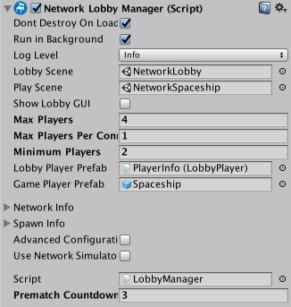

Multiplayer Lobby
Most multiplayer games have a "lobby"; a Scene in the game for players to join before playing the actual game. In the lobby, players can pick options and set themselves as ready for the game to start.
Unity provides the Network Lobby Manager component as a way for you to implement a Lobby for your game easily.
The Network Lobby Manager component provides a lobby for Unity Multiplayer games. It includes the following features:
- A simple built-in user interface for interacting with the lobby
- Limits the number of players that can join
- Supports multiple players per client, with a limit on number of players per client
- Prevents players from joining games that are in-progress
- Supports a "ready" state for clients, so a game starts when all players are ready
- Configuration data for each player
- Players re-join the lobby when the game finishes
- Virtual functions that allow custom logic for lobby events
Below are the Network Lobby Manager virtual methods. See API Reference documentation on the NetworkLobbyManager class for more details. There is a separate list for methods that are called on the client and on the server. You can write your own implementations for these methods to take action when any of these events occur.
NetworkLobbyManager virtual methods called on the server:
- OnLobbyStartHost
- OnLobbyStopHost
- OnLobbyStartServer
- OnLobbyServerConnect
- OnLobbyServerDisconnect
- OnLobbyServerSceneChanged
- OnLobbyServerCreateLobbyPlayer
- OnLobbyServerCreateGamePlayer
- OnLobbyServerPlayerRemoved
- OnLobbyServerSceneLoadedForPlayer
- OnLobbyServerPlayersReady
NetworkLobbyManager virtual methods called on the client:
- OnLobbyClientEnter
- OnLobbyClientExit
- OnLobbyClientConnect
- OnLobbyClientDisconnect
- OnLobbyStartClient
- OnLobbyStopClient
- OnLobbyClientSceneChanged
- OnLobbyClientAddPlayerFailed
All of the above server and client methods have empty default implementations, except for OnLobbyServerPlayersReady****, which calls ServerChangeScene with the PlayScene (the scene assigned to the Play Scene field in the Lobby Manager inspector.
Lobby Player GameObjects
There are two kinds of player Prefabs for the Lobby Manager: the Lobby Player Prefab and the** Game Player Prefab**. There is a field for each in the Network Lobby Manager component.

The Network Lobby Manager component
Lobby Player Prefab
The Prefab that you assign to the Lobby Player Prefab slot must have a Network Lobby Player component attached. Each client that joins the Lobby gets a new Lobby player GameObject, created from the Lobby Player Prefab. Unity creates the Lobby player GameObject when a client connects (that is, when a player joins the game), and it exists until the client disconnects.
The Network Lobby Player component holds the "ready" state for each player, and handles commands while in the lobby. You can add user scripts to the prefab to hold game-specific player data.
The Network Lobby Player component supplies some virtual method callbacks that can be used for custom lobby behaviour. These are:
public virtual void OnClientEnterLobby();
public virtual void OnClientExitLobby();
public virtual void OnClientReady(bool readyState);
Unity calls the method OnClientEnterLobby on the client when the game enters the lobby. This happens when the lobby Scene starts for the first time, and also when returning to the lobby from the gameplay Scene.
Unity calls the method OnClientExitLobby on the client when the game exits the lobby. This happens when switching to the gameplay Scene.
Unity calls the method OnClientReady on the client when the ready state of that player changes.
Game Player Prefab
A game starts when all players have indicated they are ready. When the game starts, Unity creates a GameObject for each player, based on the the Game Player Prefab. Unity destroys these GameObjects at the end of the game, when players when re-enter the lobby. The Game Player Prefab handles commands while in the game. This prefab is a standard networked GameObject, and must have a Network Identity component attached.
Minimum Players
On the Network Lobby Manager component, the Minimum Players field represents the minimum number of players that need to indicate that they are ready before the game starts. If the number of connected clients reaches the Minimum Players value, then waiting for all connected clients to become "Ready" starts the Match.
For example if "Minimum Players" is set to 2:
- Start one instance of the game, and begin the game in host mode. Then in your game’s lobby interface, press "Start" for your player. You are still in the lobby, because the minimum number of ready players to start a game is 2.
- Start two more instances of the game, and begin those games in client mode in those instances. Wait for all connected players (in this example, three) to become ready. Press "Start" in the Lobby UI for one player. Now, two players are ready, but still in the lobby. Press “Start” in the Lobby UI for the last player. All players move to the main game Scene.
Adding the Lobby to a game
These steps outline the basic process for adding a Network Lobby to a multiplayer game using Unity’s built-in networking features:
- Create a new Scene for the lobby
- Add the Scene to the Build Settings (File > Build Settings… > Add Open Scenes), as the first Scene
- Create a new GameObject in the new Scene and rename it LobbyManager
- Add the Network Lobby Manager component to the LobbyManager GameObject
- Add the Network Manager HUD component to the LobbyManager GameObject
- Open the Inspector for the Network Lobby Manager component
- In the Network Lobby Manager, set the Lobby Scene to the Scene that contains the LobbyManager GameObject
- In the Network Lobby Manager, set the Play Scene to the main gameplay Scene for the game
- Create a new GameObject and rename it LobbyPlayer
- Add the Network Lobby Player component to the LobbyPlayer
- Create a prefab for the LobbyPlayer GameObject, and delete the instance from the Scene
- Set the LobbyPlayerPrefab field (in the Network Lobby Manager inspector) to the LobbyPlayer prefab
- Set the GamePlayerPrefab field (in the Network Lobby Manager inspector) to the prefab for the player in the main game
- Save the Scene
- Run the game
This version of the Network Lobby Manager is a very simple implementation, and uses a placeholder user interface, much like like the Network Manager HUD. Before you release your game, you should replace this with your own own user interface that matches your game’s visual design and feature requirements.
For an example of a better user interface, see the [multiplayer-lobby asset package]((https://www.assetstore.unity3d.com/en/#!/content/41836) available on the Asset Store.
The NetworkLobbyManager class has many virtual function callbacks for custom lobby behaviour. The most important function is OnLobbyServerSceneLoadedForPlayer, which is called on the server for each player when they transition from the lobby to the main game. This is the ideal place to apply settings from the lobby GameObject to the player GameObject.
// for users to apply settings from their lobby player GameObject to their in-game player GameObject
public override bool OnLobbyServerSceneLoadedForPlayer(GameObject lobbyPlayer, GameObject gamePlayer)
{
var cc = lobbyPlayer.GetComponent<ColorControl>();
var player = gamePlayer.GetComponent<Player>();
player.myColor = cc.myColor;
return true;
}
Sample Project
There is a sample project on the** Unity Asset Store** that uses the Network Lobby Manager and provides a GUI for the lobby. You can use this as a starting point for making your own Lobby for your multiplayer game. See Asset Store: Lobby Sample Project.